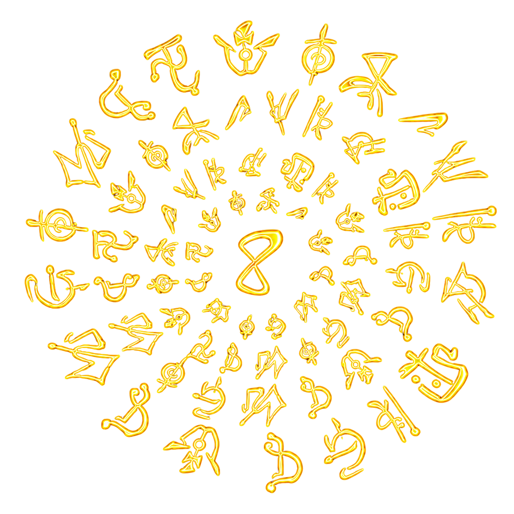

ARQUIVO DA CAMPANHA // ORDO REALITAS
Elementos
Central de contenção das cinco assinaturas paranormais reconhecidas pela Ordo. Cada elemento distorce o arquivo de um jeito diferente: alguns pulsam, alguns revelam demais, alguns quebram, alguns envelhecem e alguns simplesmente retiram a luz da interface.
acesso parcial
leitura instável
contenção visual ativa

Conhecimento Morte
Morte Energia
Energia
01
abrir arquivo
02
abrir arquivo
03
abrir arquivo
04
abrir arquivo
05
abrir arquivo
Sangue
Impulso Vivo
Batimento, carne, fome, veias, desejo e instinto.Conhecimento
Excesso de Saber
Símbolos, olhos, camadas, interpretação e perda.Energia
Caos Instável
Glitch, faísca, erro, velocidade e reconfiguração.Morte
Tempo em Ruína
Poeira, ciclo, atraso, relógio, fim e decadência.Medo